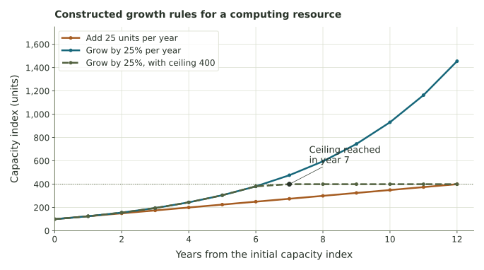

Growth, capacity, and an explicit limit.
Use a hypothetical computing resource to compare fixed additions, percentage growth, and a policy that stops growth at a ceiling.
What does it mean to say an AI resource is growing?
A computing center might describe changes in processing capacity, data volume, energy use, or service demand. “Add 25 units” and “increase by 25%” specify different rules. We can study the distinction with the same mathematics as simple and compound interest.
Imagine an index of available computing capacity that starts at 100 units. These are normalized capacity units, not a count of whole computers. All values and growth rates below are invented. The model concerns a resource used by AI services; it does not measure intelligence, learning, or answer quality.
Additive plan
\(A_{k+1}=A_k+25\), starting at 100. Each year adds 25 capacity units.
Percentage-growth plan
\(B_{k+1}=1.25B_k\), starting at 100. Each year adds 25% of the current capacity.
Trace two years before using a formula
| Year | Add 25 units per year | Grow by 25% per year |
|---|---|---|
| 0 | 100 | 100 |
| 1 | 125 | 125 |
| 2 | 150 | 156.25 |
| 3 | 175 | 195.3125 |
| 4 | 200 | 244.140625 |
The first changes agree because 25% of 100 is 25. In year 2, the percentage plan adds 31.25 units because its base is now 125. The additive plan continues adding 25.
These rules connect the current state to the next one. A resource limit or a policy change can alter that connection; an exponential formula is a conditional model, not a prediction that growth must continue.
Compare an amount, a factor, and an estimate
A capacity limit changes the trajectory
Keep both original growth plans. Add a third, hypothetical policy: capacity grows by 25% per year until it reaches a ceiling K, then remains at K. Its update is \(L_{k+1}=\min(K,1.25L_k)\), starting at 100. “Min” means choose the smaller of the two listed values.

Displayed capacity values are rounded; updates retain precision.
Compare years 2, 7, and 12 at K=400. When does the limited plan first differ from the uncapped percentage plan? Which assumption changed? The fixed-addition plan remains uncapped here so we can compare three explicitly different rules.
Ask what the index does and does not measure
A growing compute-capacity index does not establish that learning, reliability, or useful service grows at the same rate. Each outcome needs a defined measure and observations. A capacity ceiling also needs a physical or policy explanation if we want to use it for an actual operation.
Connect Weeks 5, 6, and 7
Week 5 focused on repeated updates and feedback. Week 6 distinguishes the patterns generated by fixed additions, percentages, and scheduled subtractions. Week 7 asks how a chosen goal changes which available plan we prefer. Naming the rule and its assumptions comes first.